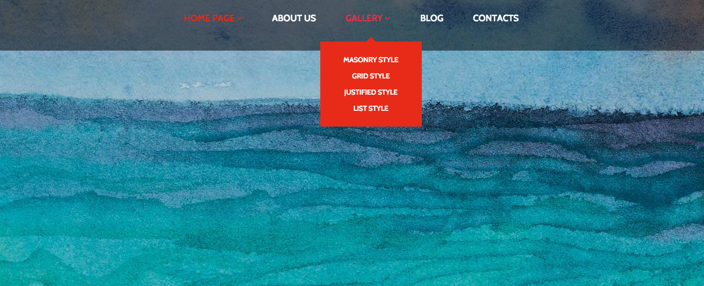

Kelsey M. Brickel
24 years young | Proud Mom | Ambitious Student and Soldier
I am a passionate Web Developer, trying to improve my programming skills. I hope to one day open a marketing company of my own, and my hopes are so high I already bought the domain name. I never thought I would be able to create things like this, and I'm so excited to continue in this degree and learn as much as I possibly can.
Featured Component
Parallax Effect

What I hope to practice and learn:
I hope to learn how to make this a regular section on my pages. Although I think some pages use it too much, I think a small section like was used on this site would be great. I want to practice putting it in different spots, and learn what the best uses for it would be as far as design.
How I feel this relates to what I've learned throughout this degree:
I learned how to make pages in general responsive thus far but I have not learned how to create this 3D effect. I found that most of this is animation, and probably javascript which is something I struggle with and need to spend a lot more time on.
How I might build this:
1. Creat component as a div nested inside a section
2. Place an image inside of the section using CSS
3. Using CSS
4. Possibly add some text fading
View Component
Lazy Load Effect
What I hope to practice and learn:
I hope to learn the animation behind this and where the most appropriate places would be to use this effect.
How I feel this relates to what I've learned throughout this degree:
I have used very few effects so this will be great practice to learn how to use create these effects
View Component
Responsive CTA
What I hope to practice and learn:
I hope to learn how to create beautiful and responsive CTA's that don't overwhelm my content, and don't take too long to load.
How I feel this relates to what I've learned throughout this degree:
I have made a few decent CTA's but none with a responsive image, so this will help me learn how to do that.
View Component
Drop Down Menu Header

What I hope to practice and learn:
I want to learn how to do this without using a framework. I struggle most with javascript and debugging the errors, so I hope to increase my knowledge and skills with that.
How I feel this relates to what I've learned throughout this degree:
I tried in a previous class, but for some reason I couldn't get it to work and I ran out of time on the project to ask extensive questions about why I couldn't get my javascript to work.
Image Carousel
What I hope to practice and learn:
I hope to learn how to create an image carousel without using frameworks like Bootstrap or Skeleton
How I feel this relates to what I've learned throughout this degree:
When I have created image carousel's previously it has always been with a framework. I want to sharpen my skills so that I'm able to create them from scratch.
View Component